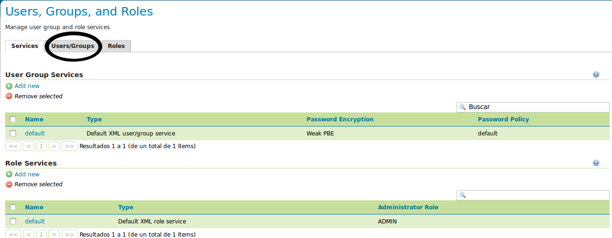

Introducción a GeoServer¶
Note
| Fecha | Autores |
|---|---|
| 1 Diciembre 2012 |
|
©2013 FAO Forestry
Excepto donde quede reflejado de otra manera, la presente documentación se halla bajo licencia : Creative Commons (Creative Commons - Attribution - Share Alike: http://creativecommons.org/licenses/by-sa/3.0/deed.es)
La interfaz web de administración de GeoServer está accesible en:
Nótese que es posible acceder remotamente a dicha interfaz, de tal manera que si la dirección de la máquina es por ejemplo 172.16.250.131, es posible acceder desde cualquier otra máquina:
http://172.16.250.131/geoserver/
Para poder cambiar la configuración, es necesario identificarse con el usuario admin y contraseña geoserver.
La columna de la izquerda reune los enlaces hacia todas las páginas de configuración.
En este apartado veremos brevemente la primera sección, Servidor.
Estado del Servidor¶

El directorio de datos¶
La información más importante de esta primera página es el directorio de datos, técnicamente conocido como GEOSERVER_DATA_DIR. Indica el directorio donde se almacenará toda la información relativa a la configuración de GeoServer. Por tanto, es una localización de la que convendrá realizar copias de seguridad.
En nuestro caso, el directorio de datos es /var/geoserver/data.
Máquina Java y JAI nativo¶
Para un óptimo rendimiento de GeoServer, es recomendable utilizar la máquina virtual de java de Oracle 1.6, e instalar las librerías nativas JAI y JAI ImageIO.
Los detalles sobre la instalación de GeoServer quedan fuera del alcance de esta guía. En caso necesario, se pueden consultar en la documentación técnica de referencia de la plataforma, y en la documentación oficial de GeoServer.
Logs de GeoServer¶
El log o archivo de registro de una aplicación es un fichero de texto donde se van almacenando detalles sobre la ejecución del mismo. Así, un archivo de log guarda un histórico con el detalle de las operaciones realizadas, con mayor o menor detalle. Generalmente, cuando ocurre un error de ejecución, se consulta este archivo para obtener detalles sobre las causas del mismo.
Información de Contacto¶
Esta información de contacto se utilizará en los documentos de GetCapabilities del servidor de mapas. Así pues, es una información que se hará pública, y que servirá a los consumidores de los geoservicios para contactar con sus responsables. Es por tanto importante rellenarla con datos significativos:

Demostración: Es posible visualizar esta información desde gvSIG al realizar la conexión al servidor cargando una capa WMS por ejemplo.
Acerca de GeoServer¶
Esta es una página informativa donde se puede consultar la versión de GeoServer, así como enlaces a la web principal del proyecto, a la documentación, y al sistema de seguimiento de incidencias.
Gestión de usuarios¶
TODO: verificar que está actualizado
Existe la posibilidad de cambiar la contraseña del usuario admin, así como de crear nuevas cuentas de usuario con permisos de administración. Sin embargo en este punto nos centraremos únicamente en el cambio de contraseña del usuario admin.
Para ello, hay que seguir los siguientes pasos:
lo primero que hay que hacer es seleccionar la entrada “Users, Groups, Roles” del apartado de “Seguridad”.

En la pantalla resultante hay que seleccionar Users/Groups.
Y en ella pinchar sobre admin para poder editar su password: